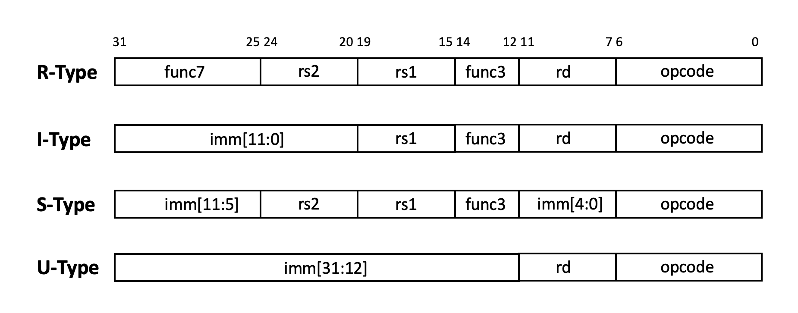
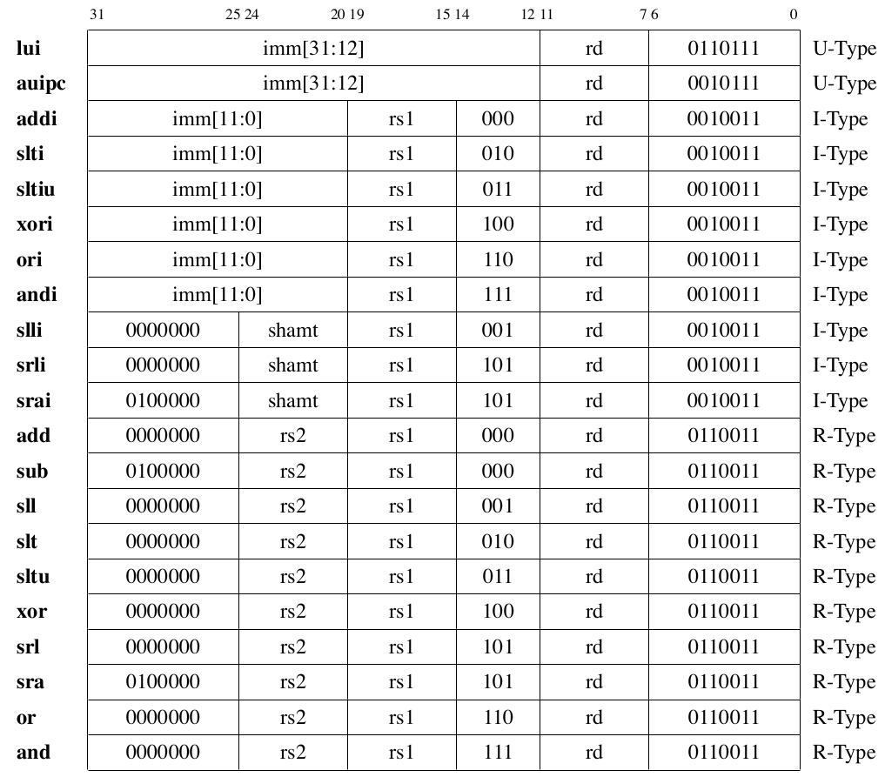
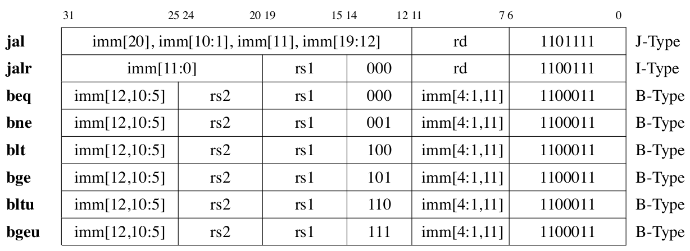
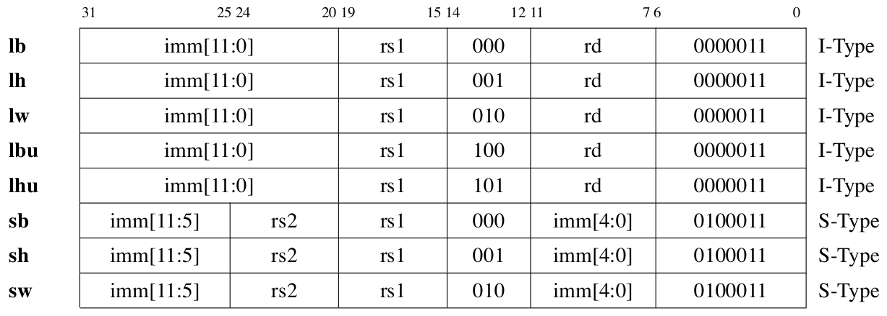
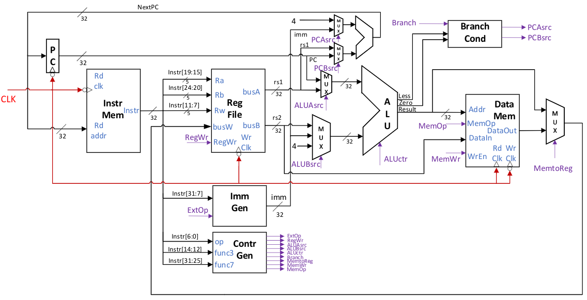
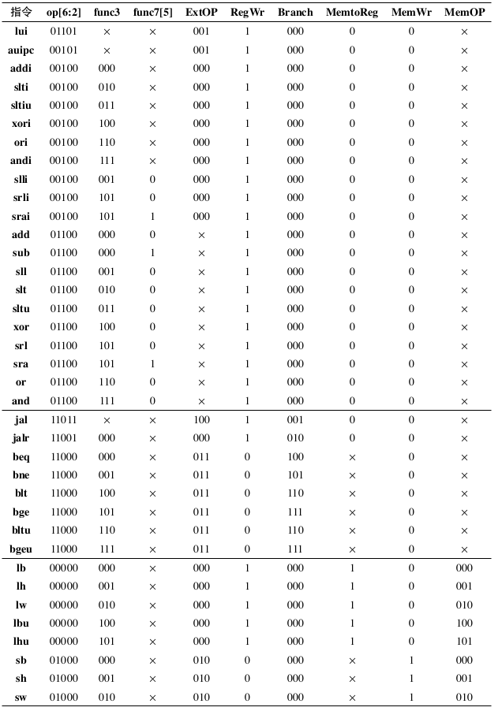
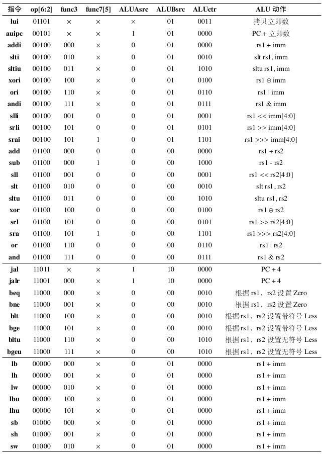
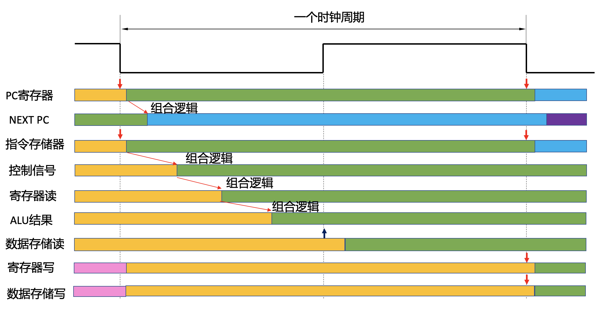
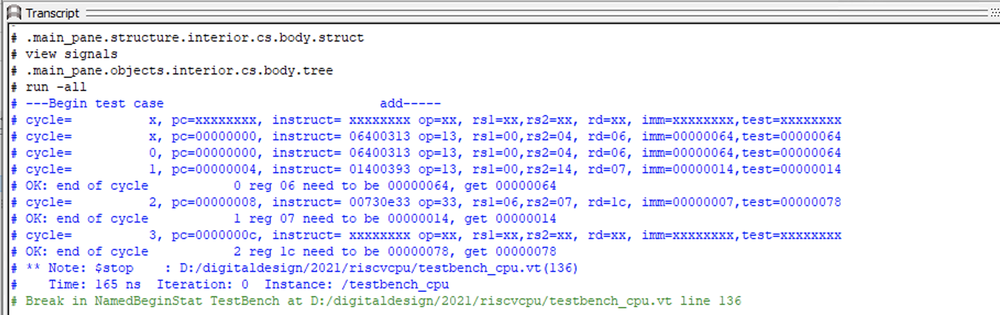
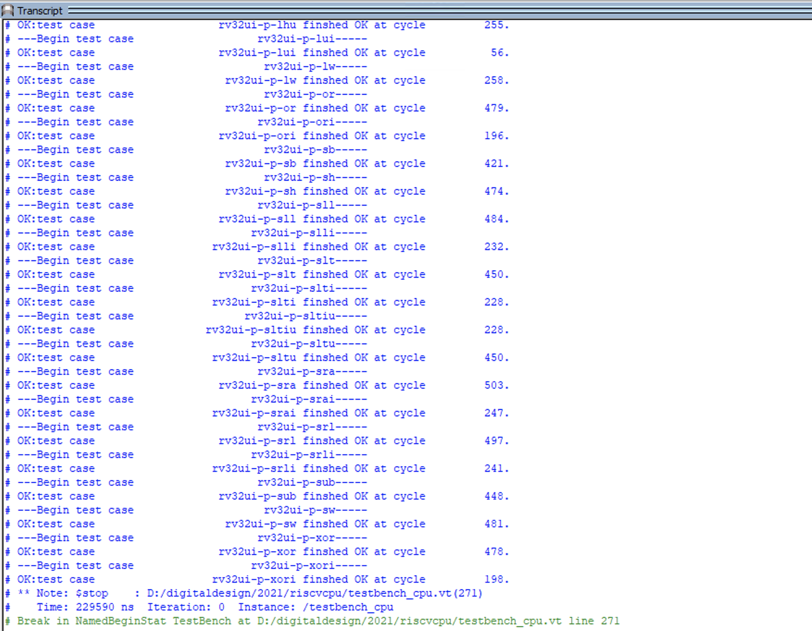

Lab 11: RV32I Single Cycle CPU
“Your Majesty, we have named this computer ‘Qin No. 1’. Please look at the center part, which is the CPU, the core computing component of the computer. It is composed of your five most elite legions. Referring to this diagram, you can see the adder, registers, and stack memory inside. The neatly arranged outer section is the memory. When constructing this part, we found ourselves short-handed, but fortunately, each unit’s operation was the simplest. We trained each soldier to carry flags of multiple colors, and when combined, a single person could perform the operations originally requiring twenty people, thereby meeting the minimum memory capacity requirement for running the ‘Qin 1.0’ operating system;”
— “The Three-Body Problem”, Liu Cixin
The goal of this lab is to use FPGA to implement all RV32I instructions except for system control instructions. The RV32I control path and data path are implemented using a single-cycle method, and functional simulation is successfully completed. After completing functional simulation, single-step testing can be performed on the DE10-Standard development board. Through the actual design of a single-cycle CPU, you will understand the principles of internal control and data paths of the CPU, and master basic system-level testing and debugging techniques.
RISC-V Instruction Set Overview
RISC-V is an open source instruction set introduced by UC Berkeley. The instruction set contains a series of basic instruction sets and optional extension instruction sets. In this lab, we will mainly focus on the 32-bit basic instruction set RV32I. The RV32I instruction set contains 40 basic instructions covering several major categories: integer operations, memory access, control transfers, and system control. In this lab, we do not need to implement the ECALL/EBREAK system control, memory synchronization FENCE instructions, and CSR access instructions, so we need to implement a total of 37 instructions. The program counter PC and 32 general-purpose registers in RV32I are 32 bits long, and the memory access address line width is also 32 bits. The instruction length of RV32I is also unified to 32 bits, so there is no need to support 16-bit compressed instruction formats during implementation.
RV32I Instruction Encoding
The RV32I instruction encoding is very regular, divided into six types, four of which are basic encoding types, and the remaining two are variants:
R-Type : register operand instructions, it contains two source registers rs1 and rs2 and one destination register rd.
I-Type : immediate number operation instructions, containing a source register, a destination register, and a 12-bit immediate number operand.
S-Type : memory write instructions, containing two source registers and a 12-bit immediate value.
B-Type: jump instructions, it’s actually a variant of the S-Type. The main difference between the two is the immediate number encoding. In the S-Type, imm[11:5] becomes {immm[12], imm[10:5]}, and imm[4:0] becomes {imm[4:1], imm[11]}.
U-Type : long immediate number instructions, containing a destination register and a 20-bit immediate number operand.
J-Type: long jump instructions, it’s actually a variant of the U-Type. The main difference between the two is the immediate number encoding. In the U-Type, imm[31:12] becomes {imm[20], imm[10:1], imm[11], imm[19:12]}.
The four basic formats are shown in Figure fig-riscvisa:

Fig. 73 The four basic formats of RV32I instructions
In instruction encoding, the opcode must be the lower 7 bits of the instruction, and the source registers rs1, rs2, and destination register rd also appear in specific positions, so instruction decoding is very convenient.
Thinking question
Why are there different immediate number encoding schemes such as S-Type/B-Type and U-Type/J-Type? Why do instruction-related immediate numbers use such a “strange” bit order when encoding?
General Purpose Registers in RV32I
RV32I has a total of 32 32-bit general purpose registers x0 to x31 (register addresses are 5-bit encoded), among which the content of register x0 is always 0 and cannot be changed.
For the aliases and usage conventions of other registers, see Table tab-regname. It should be noted that some registers are saved by the caller when a function is called, while others are saved by the callee. This should be taken into consideration when mixing C and assembly language programming.
Register |
Name |
Use |
Saver |
|---|---|---|---|
x0 |
zero |
Constant 0 |
– |
x1 |
ra |
Return Address |
Caller |
x2 |
sp |
Stack Pointer |
Callee |
x3 |
gp |
Global Pointer |
– |
x4 |
tp |
Thread Pointer |
– |
x5~x7 |
t0~t2 |
Temp |
Caller |
x8 |
s0/fp |
Saved/Frame pointer |
Callee |
x9 |
s1 |
Saved |
Callee |
x10~x11 |
a0~a1 |
Arguments/Return Value |
Caller |
x12~x17 |
a2~a7 |
Arguments |
Caller |
x18~x27 |
s2~s11 |
Saved |
Callee |
x28~x31 |
t3~t6 |
Temp |
Caller |
Instruction types in RV32I
The RV32I instructions to be implemented in this experiment include the following three categories:
Integer arithmetic instructions: These can be calculations performed on two source register operands, or one register and one immediate operand, with the result sent to the destination register. Arithmetic operations include arithmetic operations with signed and unsigned numbers, shifts, logical operations, and comparison with bits setting.
Control transfer instructions: Conditional branches include beq, bne, etc., which select whether to jump based on the contents of the register. Unconditional jump instructions store the address of the next instruction PC+4 in rd for use when the function returns.
Memory access instructions: Memory operations first add the immediate offset to the register, and then read/write memory based on the calculated result. Reading and writing can be performed in 32-bit words, 16-bit half-words, or 8-bit bytes. Reading and writing distinguish between unsigned and signed numbers. Note: RV32I is a Load/Store type architecture. All data in memory must first be loaded into the register before it can be operated on. Unlike x86, arithmetic operations cannot be performed directly on memory data.
Integer Arithmetic Instructions
The RV32I’s integer arithmetic instructions include 21 different instructions, whose instruction encoding methods are shown in Table fig-integercode.

Fig. 74 List of integer arithmetic instruction encodings in RV32I
The operations required to complete these integer operation instructions are shown in Table tab-integerop. In the description, R[reg] indicates an operation on the register with address reg, M[addr] denotes an operation on memory at address addr, SEXT(imm) denotes signed extension of imm to 32 bits, \(\leftarrow\) denotes assignment, << and >> denote logical left and right shifts, respectively, >>> denotes arithmetic right shift (note the difference in definition between Verilog and Java), and comparisons with s and u subscripts denote signed and unsigned comparisons, respectively.
Instruction |
Operation |
|---|---|
lui rd,imm20 |
\(R[rd] \leftarrow \{imm20, 12'b0\}\) |
auipc rd,imm20 |
\(R[rd] \leftarrow PC + \{imm20, 12'b0\}\) |
addi rd,rs1,imm12 |
\(R[rd] \leftarrow R[rs1] + SEXT(imm12)\) |
slti rd,rs1,imm12 |
\(if\ R[rs1] <_s SEXT(imm12)\ then\ R[rd] \leftarrow 32'b1 else R[rd] \leftarrow 32'b0\) |
sltiu rd,rs1,imm12 |
\(if\ R[rs1] <_u SEXT(imm12)\ then\ R[rd] \leftarrow 32'b1 else R[rd] \leftarrow 32'b0\) |
xori rd,rs1,imm12 |
\(R[rd] \leftarrow R[rs1] \oplus SEXT(imm12)\) |
ori rd,rs1,imm12 |
\(R[rd] \leftarrow R[rs1] | SEXT(imm12)\) |
andi rd,rs1,imm12 |
\(R[rd] \leftarrow R[rs1] \& SEXT(imm12)\) |
slli rd,rs1,shamt |
\(R[rd] \leftarrow R[rs1] << shamt\) |
srli rd,rs1,shamt |
\(R[rd] \leftarrow R[rs1] >> shamt\) |
srai rd,rs1,shamt |
\(R[rd] \leftarrow R[rs1] >>> shamt\) |
add rd,rs1,rs2 |
\(R[rd] \leftarrow R[rs1] + R[rs2]\) |
sub rd,rs1,rs2 |
\(R[rd] \leftarrow R[rs1] - R[rs2]\) |
sll rd,rs1,rs2 |
\(R[rd] \leftarrow R[rs1] << R[rs2][4:0]\) |
slt rd,rs1,rs2 |
\(if\ R[rs1] <_s R[rs2] \hspace{0.1in} then\ R[rd] \leftarrow 32'b1 else R[rd] \leftarrow 32'b0\) |
sltu rd,rs1,rs2 |
\(if\ R[rs1] <_u R[rs2] \hspace{0.1in} then\ R[rd] \leftarrow 32'b1 else R[rd] \leftarrow 32'b0\) |
xor rd,rs1,rs2 |
\(R[rd] \leftarrow R[rs1] \oplus R[rs2]\) |
srl rd,rs1,rs2 |
\(R[rd] \leftarrow R[rs1] >> R[rs2][4:0]\) |
sra rd,rs1,rs2 |
\(R[rd] \leftarrow R[rs1] >>> R[rs2][4:0]\) |
or rd,rs1,rs2 |
\(R[rd] \leftarrow R[rs1] | R[rs2]\) |
and rd,rs1,rs2 |
\(R[rd] \leftarrow R[rs1] \& R[rs2]\) |
Careful students may notice that the basic integer arithmetic instructions do not fully cover all arithmetic operations. In RV32I, the basic instruction set can implement functions not covered by the basic instructions through pseudo-instructions or combination instructions. For details, please refer to the Common Pseudo-Instructions section. Functions such as multiplication and division are implemented through software, which will be introduced in the next lab.
Control Transfer Instructions
The RV32I includes six branch instructions and two unconditional jump instructions. Figure fig-branchcode lists the encoding methods for these control transfer instructions.

Fig. 75 List of control transfer instruction encodings in RV32I
Instruction |
Operation |
|---|---|
jal rd,imm20 |
\(makecell[l]{R[rd] \leftarrow PC + 4\\ PC \leftarrow (PC + SEXT(\{imm20,1'b0\}))}\) |
jalr rd,rs1,imm12 |
\(\makecell[l]{R[rd] \leftarrow PC + 4\\ PC \leftarrow (R[rs1] + SEXT(imm12)) \& 0xfffffffe}\) |
beq rs1,rs2,imm12 |
\(\emph{if} R[rs1]==R[rs2] \emph{then} PC \leftarrow PC + SEXT(\{imm12,1'b0\})) \emph{else} PC \leftarrow PC + 4\) |
bne rs1,rs2,imm12 |
\(\emph{if} R[rs1]!=R[rs2] \emph{then} PC \leftarrow PC + SEXT(\{imm12,1'b0\})) \emph{else} PC \leftarrow PC + 4\) |
blt rs1,rs2,imm12 |
\(\emph{if} R[rs1] <_s R[rs2] \emph{then} PC \leftarrow PC + SEXT(\{imm12,1'b0\})) \emph{else} PC \leftarrow PC + 4\) |
bge rs1,rs2,imm12 |
\(\emph{if} R[rs1] \ge_s R[rs2] \emph{then} PC \leftarrow PC + SEXT(\{imm12,1'b0\})) \emph{else} PC \leftarrow PC + 4\) |
bltu rs1,rs2,imm12 |
\(\emph{if} R[rs1] <_u R[rs2] \emph{then} PC \leftarrow PC + SEXT(\{imm12,1'b0\})) \emph{else} PC \leftarrow PC + 4\) |
bgeu rs1,rs2,imm12 |
\(\emph{if} R[rs1] \ge_u R[rs2] \emph{then} PC \leftarrow PC + SEXT(\{imm12,1'b0\})) \emph{else} PC \leftarrow PC + 4\) |
Memory Access Instructions
RV32I provides eight instructions for accessing memory by byte, half-word, and word. All memory access instructions use register indirect addressing, and memory access addresses do not have to be aligned to 4-byte boundaries, but in practice, memory accesses may be required to be aligned to 4-byte boundaries. When reading a single byte or half-word, the memory data can be sign-extended or unsigned-extended as required before being stored in the register.
Table fig-memcode lists the encoding of memory access instructions.
Table tab-memop lists the specific operations of memory access instructions.

Fig. 76 List of memory access instruction codes in RV32I
Instruction |
Operation |
|---|---|
lb rd,imm12(rs1) |
\(R[rd] \leftarrow SEXT(M_{1B}[ R[rs1] + SEXT(imm12) ])\) |
lh rd,imm12(rs1) |
\(R[rd] \leftarrow SEXT(M_{2B}[ R[rs1] + SEXT(imm12) ])\) |
lw rd,imm12(rs1) |
\(R[rd] \leftarrow M_{4B}[ R[rs1] + SEXT(imm12) ]\) |
lbu rd,imm12(rs1) |
\(R[rd] \leftarrow \{24'b0, M_{1B}[ R[rs1] + SEXT(imm12) ]\}\) |
lhu rd,imm12(rs1) |
\(R[rd] \leftarrow \{16'b0, M_{2B}[ R[rs1] + SEXT(imm12) ] \}\) |
sb rs2,imm12(rs1) |
\(M_{1B}[ R[rs1] + SEXT(imm12) ] \leftarrow R[rs2][7:0]\) |
sh rs2,imm12(rs1) |
\(M_{2B}[ R[rs1] + SEXT(imm12) ] \leftarrow R[rs2][15:0]\) |
sw rs2,imm12(rs1) |
\(M_{4B}[ R[rs1] + SEXT(imm12) ] \leftarrow R[rs2]\) |
Common Pseudoinstructions
RISC-V defines a number of commonly used pseudoinstructions. These pseudoinstructions can generally be used in assembly programs, and the assembler will convert them into corresponding instruction sequences. Table tab-pseudocode lists the common pseudoinstructions in RISC-V.
Pseudoinstruction |
Acutal instruction sequence |
Operation |
|---|---|---|
nop |
addi x0, x0, 0 |
no operations |
li rd,imm |
lui rd, imm[32:12]+imm[11]
addi rd, rd, imm[11:0]
|
Load 32-bit immediate values, loading the high order bits first,
then add the low bits, note that the low bits is sign extended.
|
mv rd, rs |
addi rd, rs |
register copy |
not rd, rs |
xori rd, rs, -1 |
inversion operation |
neg rd, rs |
sub rd, x0, rs |
negation operation |
seqz rd, rs |
sltiu rd, rs, 1 |
set bit when equal to 0 |
snez rd, rs |
sltu rd, x0, rs |
set bit when not equal to 0 |
sltz rd, rs |
slt rd, rs, x0 |
set bit when less than 0 |
sgtz rd, rs |
slt rd, x0, rs |
set bit when greater than 0 |
beqz rs, offset |
beq rs, x0, offset |
jump when equal to 0 |
bnez rs, offset |
bne rs, x0, offset |
jump when not equal to 0 |
blez rs, offset |
bge x0, rs, offset |
jump when less than or equal to 0 |
bgez rs, offset |
bge rs, x0, offset |
jump when greater than or equal to 0 |
bltz rs, offset |
blt rs, x0, offset |
jump when less than 0 |
bgtz rs, offset |
blt x0, rs, offset |
jump when greater than 0 |
bgt rs, rt, offset |
blt rt, rs, offset |
jump when rs is greater than rt |
ble rs, rt, offset |
bge rt, rs, offset |
jump when rs is less than rt |
bgtu rs, rt, offset |
bltu rt, rs, offset |
jump when rs is unsigned greater than rt |
bleu rs, rt, offset |
bgeu rt, rs, offset |
jump when rs is unsigned less than rt |
j offset |
jal x0, offset |
unconditional jump, no address saving |
jal offset |
jal x1, offset |
unconditional jump, address saved by default in x1 |
jr rs |
jalr x0, 0 (rs) |
unconditional jump to the rs register, no address saving |
jalr rs |
jalr x1, 0 (rs) |
unconditional jump to the rs register, address saved by default in x1 |
ret |
jalr x0, 0 (x1) |
function call return |
call offset |
aupic x1, offset[32:12]+offset[11]
jalr x1, offset[11:0] (x1)
|
call remote subroutines |
la rd, symbol |
aupic rd, delta[32:12]+delta[11]
addi rd, rd, delta[11:0]
|
load global address, where detla is the difference between the PC and the global symbol address |
lla rd, symbol |
aupic rd, delta[32:12]+delta[11]
addi rd, rd, delta[11:0]
|
load local address, where detla is the difference between the PC and the local symbol address |
l{b|h|w} rd, symbol |
aupic rd, delta[32:12]+delta[11]
l{b|h|w} rd, delta[11:0] (rd)
|
load global variable |
s{b|h|w} rd, symbol, rt |
aupic rd, delta[32:12]+delta[11]
s{b|h|w} rd, delta[11:0] (rt)
|
load local variable |
RV32I Circuit Implementation
Single-cycle circuit design
After understanding the instruction set architecture (ISA) of the RV32I instruction set, we will proceed to design the microarchitecture of the CPU. The same instruction set architecture can be implemented with completely different microarchitectures. When implementing different microarchitectures, as long as the state visible to the programmer, i.e., PC, general purpose registers, memory, etc., and the ISA specifications is followed during instruction execution. The specific microarchitecture implementation can be freely determined. In this lab, we will first implement the microarchitecture of a single-cycle CPU. A single-cycle CPU refers to a CPU that needs to complete all operations of an instruction in each clock cycle, that is, one instruction per clock cycle.
The execution process of each instruction generally requires the following steps:
Instruction fetch: Use the new PC of this cycle to fetch instructions from the instruction memory and place them in the instruction register (IR).
Instruction decoding: Analyze the fetched instructions, generate the control signals required to execute the instructions in this cycle, and calculate the address of the next instruction.
Read operand: Read the register operand from the register file and generate the immediate value.
Operation: Use the ALU to perform the necessary operations on the operand.
Access memory: This includes reading or writing the contents of the corresponding memory address.
Write back to register: Write the final result back to the destination register.
The above steps in the execution of each instruction require the coordination of the CPU’s control path and data path to complete. The control path is primarily responsible for generating control signals, which instruct the data path to perform specific data operations. The data path is the component that actually performs data access and computation. The development model where the control path and data path are separated is commonly encountered in digital systems. The basic design principle is: the control path must be sufficiently flexible and capable of being easily modified and expanded with new features. The performance and latency of the control path are typically not the primary optimization focus. Conversely, the data path must be simple yet highly performant. The data path must reliably and rapidly move and process large volumes of data. With a simple yet highly performant data path as support, the control path can flexibly implement various applications through the combination of control signals.
Figure fig-rv32isingle provides a reference design for the RV32I single-cycle CPU. Below, we will explain the control path and data path of this CPU separately.

Fig. 77 Circuit diagram of a single-cycle CPU
Control Path
PC Generation
The program counter PC controls the order of execution of all CPU instructions. Under sequential execution conditions, the PC for the next cycle is PC+4 for the current cycle. If a jump occurs, the PC will become the jump target address. In this design, each clock cycle starts at the falling edge of the clock signal CLK. Before the end of the previous cycle, the address NextPC of the instruction to be executed in the current cycle is generated using a combinational logic circuit. When the falling edge of the clock arrives, NEXT PC is loaded into both the PC register and the address buffer of the instruction memory, completing the first step of the current cycle instruction execution. The calculation of NextPC involves instruction decoding and jump analysis, which will be detailed in the Jump Control section. At system reset or power-on, the PC can be set to a fixed address, such as all zeros, to allow the system to execute from specific startup code.
Instruction Memory
Ther Instruction Memory is specifically used to store instructions. Although instructions and data are stored in a unified memory in the von Neumann architecture, most modern CPUs separate the instruction cache and data cache. In this experiment, we will also store instructions and data separately. The instruction memory in this experiment is similar to the instruction cache in a CPU and is implemented using SRAM in an FPGA. Since the large-capacity SRAM on the DE10-Standard development board only supports read/write operations on the rising edge, this design uses the falling edge of the clock to perform read operations on the instruction memory, with the read address being NextPC. The instruction memory only needs to support read operations. In this experiment, all instructions can be required to be 4-byte aligned, meaning the lower two bits of the PC can be considered to always be 2’b00. Since the instruction memory always reads 4 bytes at a time, the size of each memory cell can be set to 32 bits. The instruction memory can be implemented using a single-port RAM, with a total capacity typically set to 256 KB (64K instructions), which can meet the needs of most demonstration code. The instruction memory can be initialized using a MIF file, which can be generated using the toolchain provided in the experiment guide. If the instruction memory generation selects the In-System Memory dynamic SRAM content update feature, there is no need to compile the entire project; new code can be directly loaded in Quartus.
ExtOP |
Immediate Number Type |
|---|---|
000 |
immI |
001 |
immU |
010 |
immS |
011 |
immB |
100 |
immJ |
Instruction decoding and immediate number generation
After reading the instruction instr[31:0] in this cycle, the CPU decodes the 32-bit instruction and generates the immediate values corresponding to each instruction. The RV32I instructions are relatively regular, so the bits corresponding to the instruction can be directly taken as the decoding result:
assign op = instr[6:0];
assign rs1 = instr[19:15];
assign rs2 = instr[24:20];
assign rd = instr[11:7];
assign func3 = instr[14:12];
assign func7 = instr[31:25];
Similarly, you can use the imm Generator to generate all immediate values. Note that all immediate values are sign-extended, and the sign bit is always instr[31]:
assign immI = {{20{instr[31]}}, instr[31:20]};
assign immU = {instr[31:12], 12'b0};
assign immS = {{20{instr[31]}}, instr[31:25], instr[11:7]};
assign immB = {{20{instr[31]}}, instr[7], instr[30:25], instr[11:8], 1'b0};
assign immJ = {{12{instr[31]}}, instr[19:12], instr[20], instr[30:21], 1'b0};
After generating immediate numbers for various types of instructions, the multiplexer selects which of the above five types of imm is the final output of the immediate number generator based on the control signal ExtOP.
The control signal ExtOP is 3 bits and can be encoded according to Table tab-extop. Encoding not listed can be considered irrelevant.

Fig. 78 RV32I Instruction Control Signal List Part I

Fig. 79 RV32I Instruction Control Signal List Part II
Control signal generation
After determining the instruction type, it is necessary to generate the corresponding control signals for each instruction to control the data path components to perform the corresponding actions. The control signal generator generates the corresponding control signals based on the opcode in instr, as well as func3 and func7. Among them, only the upper 5 bits of the opcode are actually useful, and only the second highest bit of func7 is actually useful. The generated control signals specifically include:
ExtOP : 3 bits wide, selects the output type of the immediate number generator. For specific meanings, refer to Table
tab-extop.RegWr : 1 bit wide, controls whether to write back to register rd. When set to 1, write back to the register.
ALUAsrc: 1-bit width, selects the source of ALU input A. When set to 0, selects rs1; when set to 1, selects PC.
ALUBsrc: 2 bits wide, selects the source of ALU input B. When 00, selects rs2; when 01, selects imm (only the lower 5 bits are valid when it is an immediate shift instruction); when 10, selects the constant 4 (used to calculate the return address PC+4 during jumps).
ALUctr: 4 bits wide, selects the operation to be performed by the ALU. For specific meanings, refer to Table
tab-aluctr.Branch: 3 bits wide, specifies the type of branch or jump, used to generate the final branch control signal. For meanings, refer to Table
tab-branch.MemtoReg: 1-bit wide, selects the register rd to write back the data source. When it is 0, the ALU output is selected, and when it is 1, the data memory output is selected.
MemWr: 1-bit wide, controls whether to write to the data memory. When it is 1, it writes back to the memory.
MemOP: 3 bits wide, controls the data memory read/write format. When set to 010, it performs 4-byte read/write; when set to 001, it performs 2-byte read/write with sign extension; when set to 000, it performs 1-byte read/write with sign extension; when set to 101, it performs 2-byte read/write without sign extension; when set to 100, it performs 1-byte read/write without sign extension.
These control signals control each data path component to perform the corresponding operations according to the instructions. The list of control signals corresponding to all instructions is shown in Table fig-controlpart1 and Table fig-controlpart2.
Based on these control signals, the specific operations that the system needs to perform within a cycle under a given instruction can be derived.
Note: The control signals defined here may differ from the 9 instruction CPU control signals described in textbooks.
Students who have not studied computer architecture should refer to relevant textbooks to analyze the specific operations of the data path under given control signals for various instructions. Here, only a brief explanation is provided:
lui: The A input of the ALU is not used, and the B input is an immediate value. It is expanded according to the U-Type, and the ALU performs a copy operation on the B input. The ALU result is written back to rd.
auipc: The A input of the ALU is PC, and the B input is an immediate value. It is expanded according to the U-Type, and the ALU performs an addition operation. The ALU result is written back to rd.
Immediate number computation instructions: ALU A input is rs1, B input is immediate number, expanded according to I-Type. ALU operates according to ALUctr, and the ALU result is written back to rd.
Register computation instructions: ALU A input is rs1, B input is rs2. ALU operates according to ALUctr, and the ALU result is written back to rd.
jal: The ALU A input is PC, and the B input is the constant 4. The ALU performs the operation of calculating PC+4, and the ALU result is written back to rd. The PC calculation is performed using a dedicated adder, calculating PC+imm, where imm is J-Type extended.
jalr: The ALU A input is PC, and the B input is the constant 4. The ALU performs the operation of calculating PC+4, and the ALU result is written back to rd. PC calculation is performed by a dedicated adder, calculating rs1+imm, where imm is an I-Type extension.
Branch instructions: ALU A input is rs1, B input is rs2, and the operation performed by ALU is to compare sizes or judge zero. NextPC is selected based on the ALU flag bit, which may be PC+4 or PC+imm, where imm is a B-Type extension, and PC calculation is performed by a dedicated adder. It is not written back to the register.
Load instructions: The ALU A input is rs1, and the B input is an immediate value, and it is expanded according to I-Type. The ALU performs addition to calculate the address, reads from memory, and the memory read operation is executed by the memory itself. The memory output is written back to rd.
Store instructions: The ALU A input is rs1, the B input is an immediate number, and it is expanded according to S-Type. The ALU performs addition calculations on the address, writes the contents of rs2 to memory, and does not write back to the register.
Jump Control
During code execution, NextPC may have multiple possibilities:
Sequential execution: NextPC = PC + 4;
jal: NextPC = PC + imm;
jalr: NextPC = rs1 + imm;
Conditional jump: Based on the ALU’s Zero and Less flag, NextPC may be PC + 4 or PC + imm;
A separate dedicated adder is used in the design to perform PC calculations. At the same time, the jump control module is used to generate the adder input selection. Among them, PCAsrc controls the signal of PC adder input A, selecting the constant 4 when it is 0 and imm when it is 1. PCBsrc controls the signal of PC adder input B, selecting the PC of the current cycle when it is 0 and register rs1 when it is 1.
The jump control module determines PCASrc and PCBsrc based on the control signal Branch and the Zero and Less flags output by the ALU. The definition of the control signal Branch is shown in Table tab-branch.
The outputs of the jump control module are shown in Table tab-branchrst.
Branch |
Jump type |
|---|---|
000 |
non-jump instruction |
001 |
unconditional jump to PC target |
010 |
unconditional jump to register target |
100 |
conditional branch, equals |
101 |
conditional branch, not equals |
110 |
conditional branch, less than |
111 |
conditional branch, greater than or equals to |
Branch |
Zero |
Less |
PCAsrc |
PCBsrc |
NextPC |
|---|---|---|---|---|---|
000 |
\(\times\) |
\(\times\) |
0 |
0 |
PC + 4 |
001 |
\(\times\) |
\(\times\) |
1 |
0 |
PC + imm |
010 |
\(\times\) |
\(\times\) |
1 |
1 |
rs1 + imm |
100 |
0 |
\(\times\) |
0 |
0 |
PC + 4 |
100 |
1 |
\(\times\) |
1 |
0 |
PC + imm |
101 |
0 |
\(\times\) |
1 |
0 |
PC + imm |
101 |
1 |
\(\times\) |
0 |
0 |
PC + 4 |
110 |
\(\times\) |
0 |
0 |
0 |
PC + 4 |
110 |
\(\times\) |
1 |
1 |
0 |
PC + imm |
111 |
\(\times\) |
0 |
1 |
0 |
PC + imm |
111 |
\(\times\) |
1 |
0 |
0 |
PC + 4 |
Datapath
The single-cycle datapath can reuse the register file, ALU, and data memory designed in the previous lab, so we won’t go into detail here.
Timing design of single-cycle CPU
In a single-cycle CPU, all operations must be completed within a single cycle. Among them, the read and write operations of the single-cycle storage components are key to the timing design. In the CPU architecture, the PC, register file, instruction memory, and data memory are all state components that need to be implemented with registers or memory. In Lab 5, we also observed that requiring the above storage components to perform read/write operations asynchronously consumes a significant amount of resources and prevents the implementation of large-capacity storage. Therefore, it is necessary to carefully plan the read/write timing and implementation methods for each storage component.
Figure fig-timesingle describes the timing design proposed in this lab. In this design, since the PC and register file have small capacities, they can be read asynchronously, i.e., the corresponding data is output immediately after the address changes.
For instruction memory and data memory, a general system requires at least several hundred KB of capacity. In this case, it is recommended to use the clock edge to control reading and writing. Assume that we use the falling edge of the clock as the start of each clock cycle. Writing to memory and registers is uniformly arranged to take place on the falling edge.
For reading data memory, due to a certain delay in address calculation, reading can be performed on the rising edge of the clock.
The following figure fig-timesingle describes the specific actions of the CPU within a single clock cycle. The green part represents the correct data for the current cycle, the yellow part represents the old data from the previous cycle, and the blue part represents the future data for the next cycle.
The falling edge at the beginning of the cycle is used to write to the PC register and read the instruction memory at the same time. Since the instruction memory must be read on the falling edge and the PC output cannot be updated until after the falling edge, the PC output cannot be used as the address of the instruction memory. The input of the PC register, NextPC, can be used as the address of the instruction memory. This signal is a combination logic and is generally ready at the end of the previous cycle.
After the instruction is read, it will appear at the output end of the instruction memory. This signal can be decoded by combinational logic to generate control signals, register read/write addresses, immediate numbers, etc.
After the register read address is generated, the data of the two source registers is read directly through asynchronous reading, prepared together with the immediate number operand, and entered into the input end of the ALU.
The ALU is also a combinational logic circuit, which starts calculating after the data at the input end is ready. Since the read address of the data memory is also calculated by the ALU, the ALU output result must be ready before the rising edge of half a clock cycle arrives.
When the rising edge of the clock arrives, if the read address of the data memory is ready, the memory read operation can be performed on the rising edge.
Finally, when the falling edge of the clock arrives in the next cycle, write operations are performed on the destination register and data memory at the same time. In this way, the data in these memories will be the latest in the next cycle.
The M10K on the DE10-Standard development board used in the lab supports read/write clock-separated RAM and can perform single-cycle read/write operations at a main clock speed of 50 MHz. In this timing design, the main critical path is the read address generation of the Load instruction, which needs to be completed within half a cycle. If the timing cannot be met, consider lowering the clock frequency.

Fig. 80 Timing design of single-cycle CPU
Modular Design
The CPU design process requires multiple different modules to collaborate. It is recommended to divide the specific functions and interfaces of each module before starting coding. We provide the following reference suggestions for module division. The modules contained in the top-level entity are mainly:
CPU module: Main external interfaces include clock, reset, instruction memory address/data lines, data memory address and data lines, and custom-designed debugging signals.
ALU module: The main external interfaces are the ALU input operands, ALU control words, ALU result outputs, and flag outputs.
Adder module
Barrel shifter module
Register file module: The main external interfaces are register number input, data input, register control signals, write clock, and data output.
Control signal generation module: The main external interfaces are instruction input and various control signal outputs.
Immediate generator module: The primary external interfaces are instruction input, immediate type, and immediate output.
Jump control module: The primary external interfaces are ALU flag input, jump control signal input, and PC selection signal output.
PC generation module: The primary external interfaces are PC input, immediate input, rs1 input, PC selection signal, and NEXTPC output.
Instruction memory module: Main external interfaces include clock, address lines, and output data lines.
Data memory module: Main external interfaces include clock, input/output address lines, input/output data, memory access control signals, and write enable signals.
Peripheral devices: Used for reset or displaying debugging results, etc.
The above module division is not unique, and students can divide them according to their own understanding. The main purpose of separating the memory part from the CPU at the top level in the design is to simplify the access of peripheral devices to the memory in subsequent computer system labs. When designing, please divide the modules first, confirm the connections between the modules, and then develop each module separately. It is recommended to test the modules individually before integrating the system.
Software and Testing Section
The RISC-V CPU is a relatively complex digital system. During development, each stage must be thoroughly tested to ensure the overall reliability of the system.
Unit Testing
During development, it is necessary to first ensure that each sub-unit is functioning properly. Therefore, after completing the code for each unit, corresponding tests must be conducted. Specifically, these may include:
Code Review: Check for issues in the code writing process, especially in areas prone to errors such as variable names and data bus widths. Review warnings during compilation and determine whether they could lead to errors.
RTL Review: Use the RTL Viewer to verify that the RTL output from system compilation aligns with the design intent and that there are no floating or unconnected pins.
TestBench functional simulation: Perform functional simulation using a testbench for independent units, paying particular attention to the correctness of the ALU, register file, and memory. For storage components, analyze the timing correctness, i.e., whether the data is given at the correct time and whether it is written as expected when writing.
Single-step simulation
After completing the basic unit test, you can proceed to the overall debugging of the CPU. The main purpose of overall debugging is to verify the correctness of the basic functions of each instruction. The experiment guide provides testbench examples to help you execute and verify single instructions.
In this testbench, we first define some variables that will be used in the test:
`timescale 1 ns / 10 ps
module testbench_cpu();
integer numcycles; //number of cycles in test
reg clk,reset; //clk and reset signals
reg[8*30:1] testcase; //name of testcase
Among them, testcase is the name of our test case, which is in string format and is used to load different test cases.
Subsequently, the components in the CPU are instantiated in the testbench. Here, the CPU core, instruction storage, and data storage are instantiated separately:
// CPU declaration
// signals
wire [31:0] iaddr,idataout;
wire iclk;
wire [31:0] daddr,ddataout,ddatain;
wire drdclk, dwrclk, dwe;
wire [2:0] dop;
wire [23:0] cpudbgdata;
//main CPU
rv32is mycpu(.clock(clk),
.reset(reset),
.imemaddr(iaddr), .imemdataout(idataout), .imemclk(iclk),
.dmemaddr(daddr), .dmemdataout(ddataout), .dmemdatain(ddatain),
.dmemrdclk(drdclk), .dmemwrclk(dwrclk), .dmemop(dop), .dmemwe(dwe),
.dbgdata(cpudbgdata));
//instruction memory, no writing
testmem instructions(
.address(iaddr[17:2]),
.clock(iclk),
.data(32'b0),
.wren(1'b0),
.q(idataout));
//data memory
dmem datamem(.addr(daddr),
.dataout(ddataout),
.datain(ddatain),
.rdclk(drdclk),
.wrclk(dwrclk),
.memop(dop),
.we(dwe));
In the actual implementation, students are encouraged to modify the CPU interface according to their own designs. During testing, it is recommended to replace the memory module generated by the IP core with a memory module written by yourself, which facilitates various memory operations.
Subsequently, a series of auxiliary tasks were defined to assist us in completing various testing operations:
//useful tasks
task step; //step for one cycle ends 1ns AFTER the posedge of the next cycle
begin
#9 clk=1'b0;
#10 clk=1'b1;
numcycles = numcycles + 1;
#1 ;
end
endtask
task stepn; //step n cycles
input integer n;
integer i;
begin
for (i =0; i<n ; i=i+1)
step();
end
endtask
task resetcpu; //reset the CPU and the test
begin
reset = 1'b1;
step();
#5 reset = 1'b0;
numcycles = 0;
end
endtask
The step task advances the CPU clock by one cycle, which is equivalent to executing a single instruction in a single-cycle CPU. Note that the cycle here starts with the rising edge. In actual testing, the time can be stepped to the next cycle’s rising edge plus one time unit. This is mainly because our single-cycle CPU performs writes at the next rising edge, and data verification must be performed slightly after the rising edge. The stepn task is used to execute n instructions, and resetcpu is used to reset the CPU and restart execution from the predefined starting address.
The testbench also defines the load task:
task loadtestcase; //load intstructions to instruction mem
begin
$readmemh({testcase, ".hex"},instructions.ram);
$display("---Begin test case %s-----", testcase);
end
endtask
This task is used to load instruction files. Instruction files are in text format and are recommended to be placed in the simulate/modelsim subdirectory, with relative directory names used to locate the files. Here, $readmemh is used to read into the specified instruction memory. Since the instruction memory space is not declared in the top-level entity instructions, instructions.ram must be used to access the ram variables declared within the entity. When writing the testbench, please locate the actual variables to be accessed according to your own design.
At the same time, it is necessary to define a series of assertion tasks to assist in checking the contents of registers or memory and provide debugging messages when errors occur:
task checkreg;//check registers
input [4:0] regid;
input [31:0] results;
reg [31:0] debugdata;
begin
debugdata=mycpu.myregfile.regs[regid]; //get register content
if(debugdata==results)
begin
$display("OK: end of cycle %d reg %h need to be %h, get %h",
numcycles-1, regid, results, debugdata);
end
else
begin
$display("!!!Error: end of cycle %d reg %h need to be %h, get %h",
numcycles-1, regid, results, debugdata);
end
end
endtask
In this task, the regs variable in the CPU’s internally defined register file myregfile is accessed, and the data is extracted based on the required regid and compared with the expected data. If incorrect, the task will prompt the comparison result for easy debugging. Similarly, a similar memory content comparison module can be written to check the contents of the memory.
Assuming that you need to test the correctness of the addition statement in the CPU, you can write a short piece of assembly code.
addi t1,zero,100
addi t2,zero,20
add t3,t1,t2
During the execution of this assembly code, we can check the results of each register to observe the correctness of the code execution. Use the rars simulator used last semester to convert this assembly code to binary and write it to the add.hex file without adding the file header v2.0 raw. The specific contents of the sample file are as follows:
06400313
01400393
00730E33
The specific execution part of the testbench is as follows:
initial begin:TestBench
#80
// output the state of every instruction
$monitor("cycle=%d, pc=%h, instruct= %h op=%h,
rs1=%h,rs2=%h, rd=%h, imm=%h",
numcycles, mycpu.pc, mycpu.instr, mycpu.op,
mycpu.rs1,mycpu.rs2,mycpu.rd,mycpu.imm);
testcase = "add";
loadtestcase();
resetcpu();
step();
checkreg(6,100); //t1==100
step();
checkreg(7,20); //t2=20
step();
checkreg(28,120); //t3=120
$stop
end
During execution, we first use $monitor to define the variables we need to observe. Whenever these variables change, Modelsim will automatically print out their contents. This allows us to view the corresponding PC and key information about instruction decoding for each instruction executed. Students can also define their own signals to observe. After loading the add test case, the testbench was executed three times in single steps, and after each execution, the t1, t2, and t3 registers were checked according to our expected execution results. The actual output of Modelsim is shown in the figure: numref:fig-simoutput:

Fig. 81 Simulation output of the single-cycle CPU
As shown in the figure, after initialization, the code starts executing from the all-zero address. At the end of each cycle, the registers are checked. Note that the checkpoint occurs after the rising edge arrives, so by the end of the nth cycle, the PC and instruction have already been updated to the content of the next instruction.
Please modify the single-step simulation testbench according to your own design and design test cases to perform preliminary integration testing of the CPU.
System Function Simulation
Single-step simulation is used to simply verify the basic execution of each instruction in the CPU to ensure that the CPU can perform basic functions. However, in order to eliminate potential bugs in the CPU, we need to conduct detailed testing of the CPU implementation to avoid difficult-to-locate bugs due to CPU issues when building the entire computer system later. In this lab, we use the official RISC-V test suite to perform comprehensive system simulation of the CPU.
Introduction to the riscv-tests test suite
The RISC-V community has developed an official test suite that provides tests for different RISC-V instruction variants. To compile the test suite, you need to install the risc-v gcc toolchain and run it on Ubuntu.
apt-get install g++-riscv64-linux-gnu binutils-riscv64-linux-gnu
If you encounter problems during compilation, please refer to the troubleshooting section in PA2.2. We have ported the test to AM, located at https://github.com/NJU-ProjectN/riscv-tests.git. To use this test set, run the following command
$ git clone -b digit https://github.com/NJU-ProjectN/riscv-tests.git
$ git clone -b digit https://github.com/NJU-ProjectN/abstract-machine.git
$ export AM_HOME=$(pwd)/abstract-machine
$ cd riscv-tests
$ make
The first two lines download the riscv-tests and am source code from GitHub, the third line sets the environment variables, and finally compiles the test set. The compiled files are located in the riscv-tests/build directory, including executable files (.elf) and disassembly files (.txt), as well as the FPGA memory hex files and mif files we need. You can view the instructions included in the test cases and the address of each instruction in the disassembly files.
The official RISC-V test suite provides tests for different RISC-V instruction variants. In this lab, we mainly use rv32ui, which is the basic instruction set of RV32. u stands for user mode, and i stands for integer basic instruction set. The environment used in the lab is a non-virtual address environment, which means that only physical addresses are used to access memory.
Test Program Porting
AM provides a bare-metal runtime environment for applications. The simplest runtime environment is shown in start.S and trm.c under the abstract-machine/src/npc directory. AM sets the stack pointer, the program entry point (main), and the program exit method (halt). After initialization is complete, it jumps to the application, which is the target test in riscv-tests, to continue execution.
The riscv-tests provide unit tests for each instruction. The following is a partial disassembly fragment from the add test case:
00000580 <test_38>:
580: 01000093 li ra,16
584: 01e00113 li sp,30
588: 00208033 add zero,ra,sp
58c: 00000393 li t2,0
590: 02600193 li gp,38
594: 00701463 bne zero,t2,59c <fail>
598: 00301863 bne zero,gp,5a8 <pass>
0000059c <fail>:
59c: deade537 lui a0,0xdeade
5a0: ead50513 addi a0,a0,-339 # deaddead <_pmem_start+0x5eaddead>
5a4: 0200006f j 5c4 <halt>
000005a8 <pass>:
5a8: 00c10537 lui a0,0xc10
5ac: fee50513 addi a0,a0,-18 # c0ffee <_end+0xb0f7ee>
5b0: 0140006f j 5c4 <halt>
Here, the program checks whether the addition of the two numbers is the expected result and jumps to fail or pass accordingly. In pass, halt is called, the value of the a0 register is set to 32’h00c0ffee, and an instruction 32’hdead10cc is inserted, indicating that the test is complete. After obtaining this number in the simulation, it can be determined that the simulation is complete. If it is a fail case, a0 is set to 32’hdeaddead, and then the simulation is stopped. At the end of the simulation, the value of the a0 register can be used to determine whether all tests have passed.
Special Instruction 32’hdead10cc
Why would 32’hdead10cc definitely not appear in a normal rv32i instruction sequence? In the disassembly file, what is 32’hdead10cc disassembled into?
After compiling and generating the executable file, the resulting ELF file cannot be directly used for FPGA memory initialization. Therefore, we need to automatically generate a text .hex file for Verilog and a .mif file for IP core initialization. After compilation is complete, the following commands in abstract-machine/scripts/riscv32-npc.mk will be automatically executed to generate the .hex file that needs to be loaded into the FPGA:
RISCV_OBJCOPY ?= $(RISCV_PREFIX)objcopy -O verilog
RISCV_HEXGEN ?= 'BEGIN{output=0;}{ gsub("\r","",$$(NF)); if ($$1~/@/) {if ($$1 ~/@80000000/) {output=code;} else {output=1-code;}; gsub("@","0x",$$1); addr=strtonum($$1); if (output==1){printf "@%08x\n",(addr%262144)/4;}} else {if (output==1) {for(i=1;i<NF;i+=4) print $$(i+3)$$(i+2)$$(i+1)$$i;}}}'
RISCV_MIFGEN ?= 'BEGIN{printf "WIDTH=32;\nDEPTH=%d;\n\nADDRESS_RADIX=HEX;\nDATA_RADIX=HEX;\n\nCONTENT BEGIN\n",depth; addr=0;} { gsub("\r","",$$(NF)); if ($$1 ~/@/) {gsub("@","0x",$$1);addr=strtonum($$1);} else {printf "%04X : %s;\n",addr, $$1; addr=addr+1;}} END{print "END\n";}'
image: $(IMAGE).elf
@$(OBJDUMP) -d $(IMAGE).elf > $(IMAGE).txt
$(RISCV_OBJCOPY) $< $(IMAGE).tmp
awk -v code=1 $(RISCV_HEXGEN) $(IMAGE).tmp > $(IMAGE).hex
awk -v code=0 $(RISCV_HEXGEN) $(IMAGE).tmp > $(IMAGE)_d.hex
awk -v depth=65536 $(RISCV_MIFGEN) $(IMAGE).hex > $(IMAGE).mif
awk -v depth=32768 $(RISCV_MIFGEN) $(IMAGE)_d.hex > $(IMAGE)_d.mif
The process is divided into the following steps: First, use the disassembly tool objdump to generate a text file containing all instructions for testing purposes. Second, use the objcopy tool to generate a .tmp file that complies with Verilog format requirements. However, the data in this file is stored in 8-bit bytes and cannot be directly used to initialize 32-bit-wide memory. Third (lines 8-9), use the Linux awk text processing tool to convert the Verilog format. The awk commands should be researched and learned separately. In this example, awk determines whether to print the output based on the output variable. After reading a line, it first removes the newline character from the last token, then checks if the address starts with @. If so, it checks if the address is the starting address of the 0x80000000 code segment. Based on the code variable, it determines whether to generate a code initialization file or a data initialization file. Subsequently, it takes the lower 18 bits of the address, divides the address by four (converting from byte addressing to 4-byte addressing in our memory), and prints the modified address. For normal data lines, awk groups the tokens into sets of four and reprints them.
Thinking Question
Why does our CPU still execute correctly and find the corresponding data when we only take the lower 18 bits of the code segment and data segment addresses starting with 0x80000000 to generate the initialization files for the code and data memory?
The fourth step (lines 10-11) uses awk to convert the text from hex format to mif format, adding file headers, footers, and address identifiers.
Thinking Question
If the data storage device is implemented using four 8-bit memory chips, how do you generate the initialization file corresponding to the four memory chips?
Using the framework and methods described above, we can easily port other test programs. Take a simple summation computation as an example:
//sum.c
#define PASS_CODE 0xc0ffee
#define FAIL_CODE 0xdeaddead
void halt(int code);
__attribute__((noinline))
void check(int cond) {
if (!cond) halt(FAIL_CODE);
}
int main() {
int i = 1;
volatile int sum = 0;
while(i <= 100) {
sum += i;
i ++;
}
check(sum == 5050);
return PASS_CODE;
}
And write the corresponding Makefile file. We provide a simple Makefile example as follows:
// Makefile
.PHONY: all clean $(ALL)
ARCH ?= riscv32-npc
ALL ?= sum
all: $(addprefix Makefile-, $(ALL))
@echo "" $(ALL)
$(ALL): %: Makefile-%
Makefile-%: %.c
@/bin/echo -e "NAME = $*\nSRCS = $<\nLIBS += klib\nINC_PATH += $(shell pwd)/env/p $(shell pwd)/isa/macros/scalar\ninclude $${AM_HOME}/Makefile" > $@
-@make -s -f $@ ARCH=$(ARCH) $(MAKECMDGOALS)
-@rm -f Makefile-$*
clean:
rm -rf Makefile-* build/
Specify the source files to be compiled using the variable ALL, and use the Makefile in AM to compile the application, runtime environment, and library functions defined in AM into an executable file. Students can read the Makefile in AM to understand the specific compilation process, or write their own Makefile for compilation. After setting the environment variable AM_HOME, you can compile the files using the make command, and find coresponding files in the build directory. This allows you to write more test cases to test the implementation of the processor.
TestBench
We need to modify Testbench to support simulation of the official test suite. The following auxiliary tasks have been added:
integer maxcycles =10000;
task run;
integer i;
begin
i = 0;
while( (mycpu.instr!=32'hdead10cc) && (i<maxcycles))
begin
step();
i = i+1;
end
end
endtask
The code execution task run will continue to execute the code step by step until it encounters the code termination signal we defined. If the code does not terminate, the simulation will stop after a given maximum cycle.
The simulation results are tested by checking whether the data in the a0 register meets expectations after the simulation is completed. Of course, if the program does not terminate or the a0 data is abnormal, an error will be reported.
task checkmagnum;
begin
if(numcycles>maxcycles)
begin
$display("!!!Error:test case %s does not terminate!", testcase);
end
else if(mycpu.myregfile.regs[10]==32'hc0ffee)
begin
$display("OK:test case %s finshed OK at cycle %d.",
testcase, numcycles-1);
end
else if(mycpu.myregfile.regs[10]==32'hdeaddead)
begin
$display("!!!ERROR:test case %s finshed with error in cycle %d.",
testcase, numcycles-1);
end
else
begin
$display("!!!ERROR:test case %s unknown error in cycle %d.",
testcase, numcycles-1);
end
end
endtask
Data storage can be initialized using the hex file we generate. During simulation, the RAM module we provide can be used to replace the module generated by the IP core. Data storage initialization is generally only required when testing memory access instructions.
task loaddatamem;
begin
$readmemh({testcase, "_d.hex"},datamem.mymem.ram);
end
endtask
We also provide a simple task that can execute a single test case.
task run_riscv_test;
begin
loadtestcase();
loaddatamem();
resetcpu();
run();
checkmagnum();
end
endtask
Therefore, during the simulation process, we only need to execute all the necessary simulations in sequence:
testcase = "rv32ui-p-simple";
run_riscv_test();
testcase = "rv32ui-p-add";
run_riscv_test();
testcase = "rv32ui-p-addi";
run_riscv_test();
testcase = "rv32ui-p-and";
run_riscv_test();

Fig. 82 Simulation output of the CPU using the official test suite
During simulation, you can temporarily comment out the $monitor task and only check the specific test cases that failed when an error occurs. Figure fig-simout2 shows an example of the output results of simulation using the official test suite.
On-Board Testing
During the design process, it is recommended that the CPU reserve a test data interface. Before testing on the board, the corresponding interface can be connected to the LED or seven-segment display on the board to display the internal status of the CPU. You can decide what content to output from the test interface, such as PC, register results, control signals, etc. During the initial on-board test, the CPU clock can be connected to the on-board KEY button, and each press will execute one cycle, which is convenient for debugging.
For single-cycle CPUs, since all steps of instruction execution must be completed within a single cycle, it is likely that they cannot run at 50 MHz. Please observe whether the timing analysis results after your CPU synthesis show any timing violations, i.e., whether the setup slack is negative for certain models. In this case, you can consider adjusting the design to reduce the critical path delay or lower the main frequency.
Lab check-in contents
Online test
Please complete the implementation of the single-cycle CPU on your own and pass the functional test and official test sections for the single-cycle CPU in the online test.
Mandatory Task: Single-cycle functional test
Mandatory Task: Single-cycle CPU official test